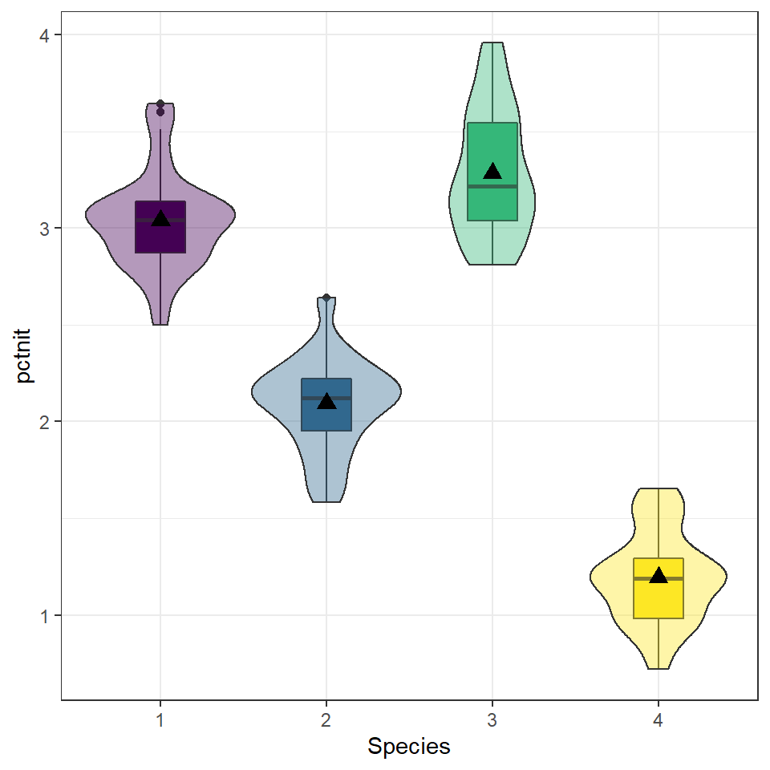

5.4 (Q~C) Multiple means: ANOVA
Frequently, a researcher wants to compare the means of an outcome across three or more treatments in a single experiment. We might initially think to do pairwise comparisons (1v2, 1v3, 2v3) for a total of three comparisons. However, this strategy can be treacherous. If we have many groups and do many comparisons, it is likely that we will eventually find a difference just by chance, even if there is no difference in the populations.
When we analyze a conventional two-treatment experiment, we are prepared to run a 1 in 20 risk of an apparently significant result arising purely by accident (the 5% chance of a Type I error). We regard such a risk as being fairly unlikely and feel justified in accepting with confidence any significant results we obtain.
Analyzing a single experiment as a series of 10 treatment pairs is a very different proposition. The chance of an apparently significant result arising purely by chance somewhere in the 10 analyses increases dramatically. Using a 5% error rate, the chance of NOT making at Type I error is .95. To not make a Type I error 10 times is \(.95^{10} = .6\). That means there is a 40% of making a Type I error!
5.4.0.1 Example: Visual Comparison
Examine the figure below. Compare groups I, II, and III. Can you visually determine if the differences in the group centers is due to chance or not? What about groups IV, V, and VI?

Side-by-side dot plot for the outcomes for six groups.
So we need some method of comparing treatments for more than two groups at a time. This is done using an Analysis of Variance (ANOVA) model. ### Terminology
- Response Variable: The response variable in the ANOVA setting is the quantitative (continuous) variable that we want to compare among the different treatments.
- Factor/Treatment: A property or characteristic (categorical variable) that allows us to distinguish the different populations from one another. An independent variable to be studied in an investigation such as temperature, type of plant, color of flower, location.
- Factor/Treatment level: Factors have different levels, such as 3 temperatures, 5 locations, 3 colors, etc.
- Within-sample Variation: Variation within a sample from one population. Individuals who receive the same treatment will experience identical experimental conditions. The variation within each of the treatment groups must therefore be a consequence of solely random variation.
- Between-sample Variation: Variation between samples. This is the difference between the group means. If some treatments are genuinely more effective than others, then we would expect to see relatively large differences between the treatment means and a relatively large between-treatments variation.
5.4.1 Formulation of the One-way ANOVA model
ANOVA is a mathematical technique which uses a model based approach to partition the variance in an experiment into different sources of variance. This technique enables us to test if most the variation in the treatment means is due to differences between the groups.
Starting with our generic conceptual understanding of statistical models:
DATA = MODEL + RESIDUAL
our MODEL for this situation is the group membership. Does knowing what group an observation is in tell you about the location of the data? The one-way (or one-factor) ANOVA model is
\[ y_{ij} = \mu_{i} + \epsilon_{ij} \qquad \qquad \epsilon_{ij} \overset{iid}{\sim} \mathcal{N}(0,\sigma^{2}) \]
for \(i=1, \ldots, I\) factor levels and \(j = 1, \ldots, n_{i}\) subjects within each factor level. The random error terms are independently and identically distributed (iid) normally with common variance.
The null and alternative hypotheses are always phrased as follows:
- \(H_0\): The mean outcome is the same across all groups. \(\mu_1 = \mu_2 = \cdots = \mu_k\)
- \(H_A\): At least one mean is different.
How do we compare means using an ANalysis Of VAriance? By comparing the portion of the variance in the outcome that is explained by the groups, to the portion that’s leftover due to unexplained randomness. Essentially we’re comparing the ratio of MODEL to RESIDUAL.
The total variation of the observed data is broken down into 2 parts:
Total Variation = Between Group Variation + Within Group Variation
Variation is measured using the Sum of Squares (SS): The sum of the squares within a group (SSE), the sum of squares between groups (SSG), and the total sum of squares (SST).
SSG (Between groups): Measures the variation of the \(I\) group means around the overall mean. \[ SSG = \sum_{i=1}^{I}n_{i}(\bar{y}_{i.}-\bar{y}..)^{2} = n_{1}(\bar{y}_{1.}-\bar{y}..)^{2} + n_{2}(\bar{y}_{2.}-\bar{y}..)^{2} + n_{3}(\bar{y}_{3.}-\bar{y}..)^{2} \]
SSE (Within group): Measures the variation of each observation around its group mean. \[ SSE = \sum_{i=1}^{I}\sum_{j=1}^{n_{i}}(y_{ij}-\bar{y}_{i.})^{2} = \sum_{i=1}^{I}(n_{i}-1)Var(Y_{i}) \]
SST (Total): Measures the variation of the \(N\) data points around the overall mean. \[ SST = \sum_{i=1}^{I}\sum_{j=1}^{n_{i}}(y_{ij}-\bar{y}..)^{2} = (N-1)Var(Y) \]
5.4.2 Analysis of Variance Tabl*:
The results of an analysis of variance test are always summarized in an ANOVA table. The format of an ANOVA table is as follows:
| Source | SS | df | MS | F |
|---|---|---|---|---|
| Groups | SSG | \(I-1\) | MSG = \(\frac{SSG}{I-1}\) | \(\frac{MSG}{MSE}\) |
| Error | SSE | \(N-I\) | MSE = \(\frac{MSG}{N-I}\) | |
| Total | SST | \(N-1\) |
5.4.3 The F-distribution
The \(p\)-value of the test is the area to the right of the F statistic density curve. This is always to the right because the F-distribution is not symmetric, truncated at 0 and skewed right. This is true regardless of the \(df\).

5.4.4 Assumptions
Generally we must check three conditions on the data before performing ANOVA:
- The observations are independent within and across groups
- The data within each group are nearly normal
- The variability across the groups is about equal.
When these three conditions are met, we may perform an ANOVA to determine whether the data provide strong evidence against the null hypothesis that all the \(\mu_i\) are equal.
5.4.5 Example: A comparison of plant species under low water conditions
The PLANTS1 data file gives the percent of nitrogen in four different species of plants grown in a laboratory. The researchers collected these data in parts of the country where there is very little rainfall. To examine the effect of water, they varied the amount per day from 50mm to 650mm in 100mm increments. There were 9 plants per species-by-water combination. Because the plants are to be used primarily for animal food, with some parts that can be consumed by people, a high nitrogen content is very desirable. Let’s formally test to see if the nitrogen content in the plants differ across species.
1. Identify response and explanatory variables.
- The quantitative response variable is % nitrogen (
pctnit) - The categorical explanatory variable is species (
species)
2. Visualize and summarize bivariate relationship.
plot.nitrogen.species <- plants1 %>% select(species, pctnit) %>% na.omit()
ggplot(plot.nitrogen.species, aes(x=species, y = pctnit, fill=species)) +
geom_boxplot(width=.3) + geom_violin(alpha=.4) +
labs(x="Species") +
scale_fill_viridis_d(guide=FALSE) +
stat_summary(fun.y="mean", geom="point", size=3, pch=17,
position=position_dodge(width=0.75))
plot.nitrogen.species %>% group_by(species) %>%
summarise(mean=mean(pctnit, na.rm=TRUE),
sd = sd(pctnit, na.rm=TRUE),
IQR = IQR(pctnit, na.rm=TRUE)) %>% kable()| species | mean | sd | IQR |
|---|---|---|---|
| 1 | 3.039810 | 0.2506118 | 0.2690 |
| 2 | 2.092841 | 0.2377523 | 0.2725 |
| 3 | 3.284365 | 0.3218599 | 0.5065 |
| 4 | 1.195587 | 0.2342217 | 0.3125 |
While the standard deviations are relatively similar across all species, the means are different (3.04 v. 2.09 v. 3.28 v. 1.20), with species 3 having the largest mean nitrogen content and species 4 the smallest. Species 3 has the highest IQR and species 1 has the lowest 0.506 v. 0.269).
3. Write the relationship you want to examine in the form of a research question.
- Null Hypothesis: There is no difference in the average nitrogen content among plant species 1 through 4.
- Alternative Hypothesis: There is a difference in the average nitrogen content among plant species 1 through 4.
4. Perform an appropriate statistical analysis.
I. Let \(\mu_{1}\), \(\ldots\), \(\mu_{4}\) be the mean nitrogen content in plant species 1 through 4 respectively.
\(H_{0}: \mu_{1} = \mu_{2} = \mu_{3} = \mu_{4}\)
\(H_{A}:\) At least one mean is different.We are comparing means from multiple groups, so an ANOVA is the appropriate procedure. We need to check for independence, approximate normality and approximately equal variances across groups.
Independence: We are assuming that each plant was sampled independently of each other, and that the species themselves are independent of each other.
Normality: With grouped data it’s easier to look at the histograms than qqplots.
ggplot(plants1, aes(x=pctnit, fill=species)) + ylab("") + geom_density() +
facet_grid(species~.) +
theme(legend.position="bottom") +
scale_y_continuous(breaks=NULL) + scale_fill_viridis_d()
The distributions per group tend to follow an approximate normal distribution.
Equal variances: One way to assess if the groups have approximately equal variances is by comparing the IQR across groups.
| species | IQR | SD |
|---|---|---|
| 1 | 0.2690 | 0.2506118 |
| 2 | 0.2725 | 0.2377523 |
| 3 | 0.5065 | 0.3218599 |
| 4 | 0.3125 | 0.2342217 |
The IQRs are similar so assumption of equal variances is not grossly violated. We can proceed with the ANOVA procedure.
- We use the
aov(response $\sim$ predictor)function on the relationship between the nitrogen levels and tree species. We then pipe insummary()to make the output display nicely.
aov(pctnit~species, data=plants1) %>% summary()
## Df Sum Sq Mean Sq F value Pr(>F)
## species 3 172.39 57.46 827.5 <2e-16 ***
## Residuals 248 17.22 0.07
## ---
## Signif. codes: 0 '***' 0.001 '**' 0.01 '*' 0.05 '.' 0.1 ' ' 15. Write a conclusion in the context of the problem. The results of the ANOVA test indicate that at least one species has a different average nitrogen content than the other varieties (\(p<\).001).
5.4.6 Coefficient of determination \(R^{2}\)
The coefficient of determination is defined as \(R^{2} = \frac{SSG}{SST}\) and can be interpreted as the % of the variation seen in the outcome that is due to subject level variation within each of the treatment groups. The strength of this measure can be thought of in a similar manner as the correlation coefficient \(r\): \(< .3\) indicates a poor fit, \(< .5\) indicates a medium fit, and \(> .7\) indicates a good fit.
A large amount (91%) of the variation seen in nitrogen content in the plant can be explained by the species of plant.
5.4.7 Multiple Comparisons
Suppose that an ANOVA test reveals that there is a difference in at least one of the means. How can we determine which groups are significantly different without increasing our chance of a Type I error?
Simple! We perform all the pairwise comparisons but using a test statistic that retains a family-wise error rate of 0.05 (or our chosen \(\alpha\)). There are different methods to adjust for multiple comparisons, we will be using the Tukey HSD (honest significant difference) test. Continuing on with the analysis of nitrogen across plant species.
TukeyHSD(aov(pctnit~species, data=plants1))
## Tukey multiple comparisons of means
## 95% family-wise confidence level
##
## Fit: aov(formula = pctnit ~ species, data = plants1)
##
## $species
## diff lwr upr p adj
## 2-1 -0.9469683 -1.0684156 -0.8255209 0.0e+00
## 3-1 0.2445556 0.1231082 0.3660029 2.4e-06
## 4-1 -1.8442222 -1.9656696 -1.7227748 0.0e+00
## 3-2 1.1915238 1.0700764 1.3129712 0.0e+00
## 4-2 -0.8972540 -1.0187014 -0.7758066 0.0e+00
## 4-3 -2.0887778 -2.2102252 -1.9673304 0.0e+00The results from Tukey’s HSD for all pairwise comparisons indicate that the average nitrogen content in one species is significantly different from each of the three other species. The nice benefit of this procedure is that the difference between the means of the two groups are compared, and a 95confidence interval for each difference is included. So specifically, species 2 has on average 0.94 (0.82, 1.09) lower percent nitrogen compared to species 1 (\(p<.0001\)). Also, species 3 has on average 1.19 (1.07, 1.31) higher percent nitrogen compared to species 2 (\(p<.0001\)).